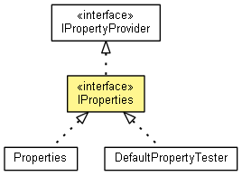

org.eclipse.net4j.util.properties
Interface IProperties<RECEIVER>
- All Superinterfaces:
- IPropertyProvider<RECEIVER>
- All Known Implementing Classes:
- DefaultPropertyTester, Properties
- public interface IProperties<RECEIVER>
- extends IPropertyProvider<RECEIVER>

Contains a list of properties.
- Since:
- 3.2
getReceiverType
Class<RECEIVER> getReceiverType()
getProperty
Property<RECEIVER> getProperty(String name)
add
void add(Property<RECEIVER> property)
Copyright (c) 2011, 2012 Eike Stepper (Berlin, Germany) and others.